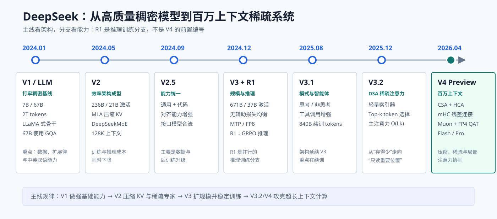
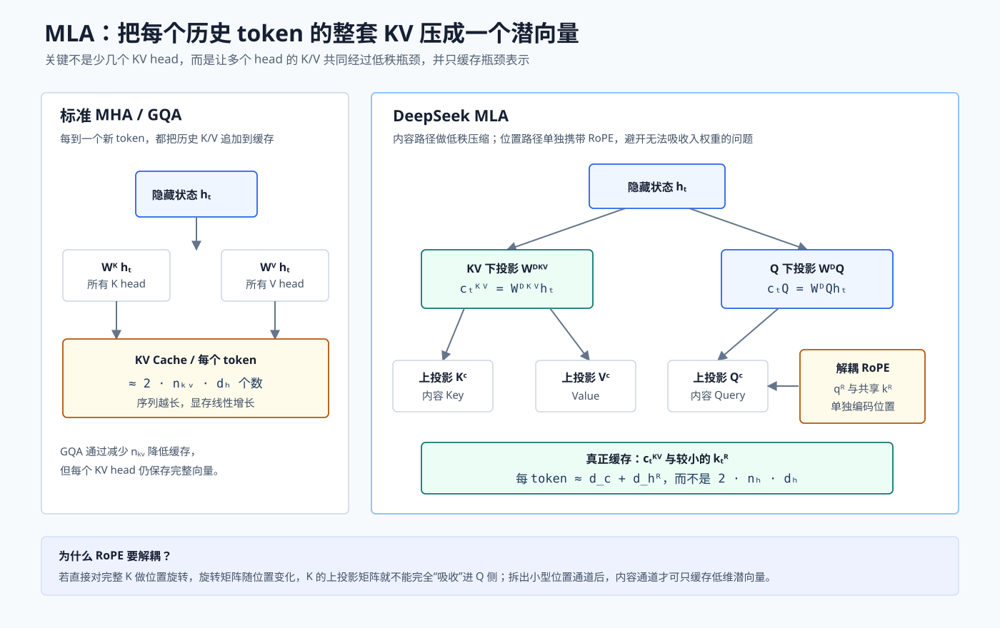
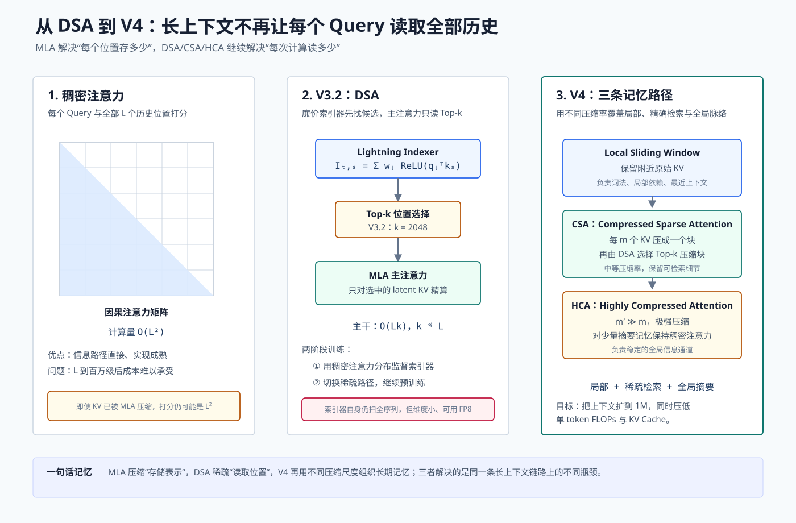

DeepSeek 全系模型详解：V1-V4 与 MLA、DSA
DeepSeek 的演进并不是简单地把参数从 67B 堆到 1.6T。它一直在回答三个非常工程化的问题：
- 模型容量如何增加，而每个 token 的计算量不要同比增加？答案是 DeepSeekMoE。
- 上下文变长后，KV Cache 如何不要撑爆显存？答案是 MLA。
- KV 已经压缩后，每个 Query 是否还要扫描全部历史？V3.2 的 DSA，以及 V4 的 CSA/HCA 继续解决这个问题。
本文以 2026 年 7 月 13 日前公开的论文、技术报告和官方模型卡为准。我们把主干版本、推理分支和产品更新分开，避免把 DeepSeek-R1 误写成“V4 的上一代”。

图 1：DeepSeek 主线模型演进。R1 是建立在 V3 系底座上的推理训练分支，和 V3.1、V3.2 这样的主干迭代不是同一维度。
阅读本文前先掌握四个口径
总参数与激活参数不是一回事
稠密模型的全部 FFN 参数都会参与每个 token 的前向计算。MoE 模型拥有很多专家，但路由器只为当前 token 选择少数专家。因此：
- 总参数决定模型可以容纳多少知识和模式，也决定完整权重需要多少存储；
- 激活参数更接近单 token 的实际计算量，但不能直接等同于显存占用；
- 671B 总参数、37B 激活的 V3，不等于一张显卡只需装下 37B 权重。所有专家仍要驻留或分布在设备上。
Base、Chat、Reasoner 是不同训练阶段
Base 模型主要完成 next-token prediction。Chat/Instruct 模型又经过监督微调和偏好对齐。Reasoner 还会用可验证奖励强化较长的推理过程。比较版本时，不能拿一个 Base 模型和另一个 Instruct 模型的对话表现来判断骨干好坏。
上下文长度不等于有效记忆长度
“支持 128K 或 1M”只说明接口与训练允许这么长。模型能否在末尾准确找回开头的一条细节，还取决于位置编码、注意力机制、长文本训练数据和评测方式。
论文报告数字要看比较基准
例如“KV Cache 减少 93.3%”来自 V2 报告在特定结构和设置下相对 DeepSeek 67B 的比较。它说明技术方向，不意味着任意部署都能得到完全相同的比例。
一张表看懂全部主线
| 版本 | 发布时间 | 代表规模 | 预训练与上下文 | 这一代真正解决的问题 |
|---|---|---|---|---|
| DeepSeek LLM / V1 | 2024-01 | 7B、67B Dense | 2T tokens，4K | 建立中英双语稠密基线与扩展律 |
| DeepSeek-V2 | 2024-05 | 236B 总参数，21B 激活 | 8.1T，128K | MLA 降 KV Cache；DeepSeekMoE 降激活计算 |
| DeepSeek-V2.5 | 2024-09 | 延续 V2 骨干 | 128K | 合并通用和代码能力，强化对齐与产品可用性 |
| DeepSeek-V3 | 2024-12 | 671B 总参数，37B 激活 | 14.8T，128K | 无辅助损失均衡、MTP、FP8、DualPipe，大规模训练稳定性 |
| DeepSeek-R1 | 2025-01 | 基于 V3 系 MoE | 128K | 用 GRPO 等强化学习释放推理能力，不是新骨干编号 |
| DeepSeek-V3.1 | 2025-08 | 延续 V3 骨干 | 额外 840B tokens 续训，128K | 思考/非思考统一、工具调用和 Agent 能力 |
| DeepSeek-V3.2 | 2025-12 | 671B 总参数，37B 激活 | 128K | DSA 让主注意力从全量历史改为 Top-k 稀疏读取 |
| DeepSeek-V4-Flash | 2026-04 预览 | 284B 总参数，13B 激活 | 32T+，1M | 面向低延迟的 CSA/HCA 混合注意力 |
| DeepSeek-V4-Pro | 2026-04 预览 | 1.6T 总参数，49B 激活 | 33T 左右，1M | 更大容量、mHC、Muon、FP4 专家与统一蒸馏 |
下面按“问题出现在哪里，技术为什么有效”的顺序展开。
V1：先证明数据与训练配方可以做强稠密基线
DeepSeek 最早的通用语言模型在论文中称为 DeepSeek LLM。今天回看，它的架构并不激进：
- 采用 decoder-only Transformer；
- Pre-Norm + RMSNorm；
- SwiGLU 前馈网络；
- RoPE 位置编码；
- 7B 使用标准多头注意力，67B 使用 GQA；
- 使用约 10 万普通 token 的 BBPE tokenizer；
- 7B 与 67B 都训练在约 2T 中英为主的 token 上。
这与 LLaMA 系骨干很接近。V1 的价值不在发明新 block，而在三个基础环节。
1. 数据体系
模型团队建立了去重、质量过滤、语言配比和污染检测流程。对于双语模型，简单把中文与英文网页拼起来并不够：不同语言的字符/token 比例不同，低质量重复内容也会改变梯度分布。
2. 扩展律
团队用小模型实验预测更大模型的最佳数据量、学习率和训练计算。扩展律不是“参数越大越好”，而是在固定预算下回答：参数量 (N) 与训练 token 数 (D) 如何配比，验证损失最低。
常见经验形式可以写成：
它让大规模训练不必完全依靠一次昂贵赌博。
3. 后训练
V1 已经采用 SFT 与 DPO，把 Base 模型转为对话模型。这一点很重要：DeepSeek 后续虽然以 GRPO 闻名，但并不是从 R1 才开始做偏好优化。
这一代的结论：先有可靠的稠密基线，后续架构改动才有公平对照。V2 的 MLA 和 MoE 都是在这个基线之上证明效率收益。
V2 第一项核心升级：MLA 压缩 KV Cache
标准注意力到底缓存什么
对于第 (t) 个 token 的隐藏状态 (h_t)：
自回归生成第 (t+1) 个 token 时，历史 token 的 K/V 不会改变，所以推理引擎把它们缓存起来。若有 (n_{kv}) 个 KV head，每个 head 维度为 (d_h)，每层、每个历史 token 大约需要保存：
长度为 (L)、层数为 (N_L) 时，元素数量近似为：
MHA 的 (n_{kv}=n_q)。GQA 让多个 Q head 共享一组 K/V，因此通过减小 (n_{kv}) 降缓存。MQA 更进一步，只留一个 KV head。详细背景可先读从 MHA 到 MQA、GQA。
MLA 的想法不是“再少几个 head”
MLA 全称 Multi-head Latent Attention。它让所有 head 的 K/V 先共同经过一个低秩瓶颈：
其中 (c_t^{KV}\in\mathbb{R}^{d_c}) 是低维 latent。计算注意力前，再用上投影恢复各 head 所需的内容 K/V：
Q 侧也可做低秩压缩：
推理时真正需要长期缓存的是 (c_t^{KV})，而不是所有 head 的完整 K/V。由于线性投影可以做代数重排，上投影还可与 Q 或输出侧矩阵吸收，避免每步真的展开巨型 K/V。

图 2：GQA 是减少 KV head 数；MLA 是把多头 K/V 共同压进 latent。两者都省缓存，但结构不同。
为什么还需要 Decoupled RoPE
若直接对内容 Key 应用 RoPE：
位置旋转矩阵 (R_t) 随 token 位置改变。这样 (W^{UK}) 就不能像普通固定线性层那样完整吸收到 Q 侧，因为不同历史位置需要不同旋转。
MLA 将内容与位置拆成两个小通道：
其中 (q^R,k^R) 是较小的 RoPE 通道，(k_s^R) 还能在 head 间共享。最终分数同时包含内容相似度和相对位置信息：
这就是“解耦 RoPE”的真正含义。它不是删除位置编码，而是把阻碍低秩权重吸收的位置部分单独保留。
MLA 带来的实际收益
V2 报告相对 DeepSeek 67B 给出的结果包括：KV Cache 减少 93.3%，最大生成吞吐提高到 5.76 倍。应把它理解为系统级联合收益：latent cache 更小后，同一 GPU 可以容纳更多请求、更长序列或更大 batch。
V2 第二项核心升级：DeepSeekMoE
为什么 MoE 能“容量大，计算少”
普通 FFN 对每个 token 都执行同一组参数：
MoE 准备 (E) 个专家，路由器只选 Top-k：
于是总参数可随专家数增加，但单 token 只激活少数专家。完整原理可参考Mixture of Experts 详解。
DeepSeekMoE 的两个结构选择
细粒度专家。把一个大 FFN 拆成更多、更小的专家。在相近激活计算量下，路由器可组合出更多专家搭配，专业化更细。
共享专家。一部分专家对所有 token 始终激活，学习共通知识；路由专家只负责差异化模式。这样可减少多个路由专家重复学习语法、常识等公共能力。
V2 的典型层包含 2 个共享专家和 160 个路由专家，每个 token 激活 6 个路由专家。236B 总参数中约 21B 参数参与一个 token 的计算。
负载均衡为什么困难
若路由器总偏爱几个专家：
- 热门专家所在设备拥堵；
- 冷门专家得不到足够梯度；
- 分布式 all-to-all 出现长尾等待；
- 极端情况下需要丢 token 才能维持固定容量。
V2 使用多种辅助均衡损失与设备受限路由。辅助损失能均衡负载，但它的梯度可能迫使 token 选择“不最合适但较空闲”的专家。V3 会专门解决这个矛盾。
V2.5：重要，但不是一次骨干换代
V2.5 将 DeepSeek-V2 的通用能力与 DeepSeek-Coder-V2 的代码能力合并到一个模型，并加强写作、指令跟随和偏好对齐。
这一代值得记录，因为它体现了模型版本的另一种升级：
- 用户不必在 general 与 coder 端点之间切换；
- 统一后训练数据让代码解释、自然语言需求与工具使用衔接更好；
- 主体 MLA + DeepSeekMoE 架构没有像 V1 到 V2 那样发生代际变化。
所以看到小数点版本时，先检查技术报告：它可能是权重、数据、模板和产品合流，而不是新的 attention block。
V3：把 V2 架构扩到 671B，同时让训练可控
V3 继续使用 MLA 和 DeepSeekMoE，但扩大到 671B 总参数、37B 激活参数，在 14.8T token 上预训练。真正的新技术集中在均衡、训练信号和系统效率。
无辅助损失的负载均衡
设路由器给专家 (i) 的原始亲和度为 (s_i(x))。V3 为每个专家维护一个偏置 (b_i)，选择专家时使用：
但计算门控权重时仍使用原始 (s_i(x))。训练中：
- 专家过载，降低它的偏置；
- 专家负载不足，提高它的偏置。
偏置改变“谁被选中”，却不把均衡目标的梯度混入模型主损失。因此它被称为 auxiliary-loss-free load balancing。V3 仍保留很小的序列级辅助项来避免单个序列内的极端失衡，不能误解成“完全没有任何均衡约束”。
MTP：一次不只预测下一个 token
标准语言模型只在位置 (t) 预测 (x_{t+1})：
Multi-Token Prediction 增加顺序模块，继续预测更远 token：
它有两层作用：
- 训练时提供更密集的未来监督，迫使表示包含更长程的可预测信息；
- 推理时辅助头可作为 speculative decoding 的草稿，一次提出多个候选 token，再由主头验证。
辅助预测模块可以在普通逐 token 推理时丢弃，因此不会强制增加标准服务路径的每步成本。
FP8 与 DualPipe
V3 在大规模训练中系统化使用 FP8 混合精度：矩阵乘法尽量用低精度，累加、归一化和部分敏感参数保留更高精度。低精度训练不是简单 float16 改成 float8，还需要分块缩放、溢出控制和高精度主权重。
DualPipe 则让流水线两个方向的 micro-batch 交错，把前向、反向以及 MoE 的跨节点通信覆盖起来。V3 报告的完整训练约使用 2.788M H800 GPU 小时；论文按 2 美元/GPU 小时估算为 557.6 万美元，但这个数字不含此前研究、数据处理和消融成本。
V3 的核心不是某个孤立模块，而是把 MLA + 稀疏 MoE 变成可在数千 GPU 上稳定训练的完整系统。
R1：推理能力分支，不是 V4 之前的架构编号
DeepSeek-R1 使用 V3 系底座，重点改变后训练方式。
R1-Zero 证明了什么
R1-Zero 几乎不依赖人工写好的长推理链，直接对 Base 模型做大规模可验证奖励强化学习。数学题答案、代码测试等任务有较明确的 reward，模型逐渐学会延长思考、自检和改写策略。
为什么正式 R1 还需要冷启动
纯 RL 容易出现语言混杂、可读性差、格式失控等问题。正式 R1 先用少量高质量 CoT 数据冷启动，再做推理 RL、拒绝采样式数据生成、通用 SFT 和第二阶段对齐。
GRPO 的关键直觉
对同一问题采样一组回答，用组内相对回报标准化 advantage，而不单独训练一个与策略模型同规模的 value model。简化地写：
再用带 clip 和 KL 约束的策略目标更新模型。完整算法可读LLM 强化学习算法详解。
因此，R1 回答的是“怎样让现有底座学会搜索推理轨迹”，V3/V4 回答的是“底座怎样存储、计算和扩展”。两条线后来在 V3.1、V3.2 与 V4 的统一模型中重新汇合。
V3.1：把思考模式和工具使用合入统一模型
V3.1 在 V3 基础上继续预训练约 840B token，并更新 tokenizer 与 chat template。它的主要变化是：
- 一个模型同时支持 thinking 与 non-thinking；
- 强化搜索、代码和工具调用；
- 推理过程能够与工具调用交错，而不是“先想完再调用”；
- 后续 Terminus 更新进一步改善语言一致性与 Agent 表现。
它不是新的注意力架构。把 V3.1 的能力提升全部归因于 MLA 改版是不准确的。
V3.2：DSA 让主注意力只读 Top-k 历史位置
MLA 已让每个历史 token 存得更小，但在长度 (L) 下，稠密注意力仍需构造近似 (L\times L) 的交互。V3.2 引入 DeepSeek Sparse Attention。
Lightning Indexer
索引器用少量 index head 给 Query (t) 与历史位置 (s) 打廉价分数：
然后选择：
主 MLA 只对 (s\in\mathcal S_t) 的 latent KV 计算高维注意力。V3.2 的训练配置选择 2048 个位置。

图 3：MLA、DSA、CSA/HCA 是连续升级链，而不是同一技术的不同名字。
索引器如何知道“重要”
训练分两步：
- Indexer warm-up。先保留稠密注意力，冻结其他参数，用稠密注意力聚合后的分布监督 indexer，最小化 KL 类目标；报告使用约 2.1B token、1000 步。
- Sparse training。切到稀疏主注意力，继续约 943.7B token 的训练；索引器使用独立/截断梯度的优化路径，避免离散 Top-k 干扰主干。
复杂度为什么不是一句“O(L)”
主注意力从 (O(L^2)) 降到 (O(Lk))，当 (k\ll L) 时收益显著。但索引器仍要低成本扫描候选位置。准确说法是：把昂贵的高维二次注意力，替换为廉价全局索引 + 高维 Top-k 精算。
V3.2 的后训练同样重要
正式 V3.2 还扩大推理 RL、Agent 任务合成和“思考中使用工具”的训练。Speciale 是投入更高推理计算的专用变体，不支持工具调用。DSA 是骨干创新，但 V3.2 的 Agent 提升不能只归因于 DSA。
V4：从稀疏位置进一步走向多尺度压缩记忆
DeepSeek 在 2026 年 4 月把 V4 作为 preview family 发布：
| 模型 | 总参数 | 激活参数 | 上下文 | 定位 |
|---|---|---|---|---|
| V4-Flash | 284B | 13B | 1M | 更低单 token 成本与高吞吐 |
| V4-Pro | 1.6T | 49B | 1M | 更大知识容量和复杂 Agent 能力 |
两者延续 MoE 与 MTP，但架构变化已经不只是“V3 再放大”。
CSA：先压缩成块，再稀疏检索
Compressed Sparse Attention 先把每 (m) 个 KV 条目压成一个代表，再用 DSA 风格 indexer 选择 Top-k 压缩条目。它保留了可检索细节，又减少候选数量。
可以把它理解成一本书的两级索引：原始 token 是逐字内容，压缩条目像小节摘要，DSA 先从摘要中找相关小节，再做精细读取。
HCA：极强压缩，但保留稠密全局通道
Heavily Compressed Attention 使用更大的压缩步长 (m’\gg m)，得到很少的全局记忆，对它们保持稠密注意力。
于是 V4 同时有三种记忆：
- 滑动窗口原始 KV：处理最近邻和局部精确依赖；
- CSA：处理中远距离、需要检索的细节；
- HCA：维持全文级主题、状态和全局摘要。
V4 报告称，在 1M 上下文下，Pro 的单 token 推理 FLOPs 约为 V3.2 的 27%，KV Cache 约为 10%；Flash 分别约为 10% 与 7%。这些是官方实现和指定配置下的报告值。
mHC：让残差流从一条变成受约束的多通道高速路
普通残差连接：
Hyper-Connections 将残差流扩成 (n_{hc}) 个通道，层可以混合读取和写回：
自由混合矩阵虽然表达力强，却可能在数百层中放大信号。mHC 的 manifold-constrained 做法把关键混合矩阵约束到双随机矩阵集合：元素非负，每行每列和为 1。借助 Sinkhorn 归一化，(B_l) 的谱范数受到控制，残差传播更接近非扩张映射。
直观上：每一层可以从多个历史通道取信息，但不能无约束地把总信号越放越大。
Muon：对矩阵参数做方向更均衡的更新
AdamW 对每个参数坐标独立做动量和方差缩放。Muon 先累积矩阵梯度动量，再通过 Newton-Schulz 迭代近似正交化更新方向，让不同奇异方向的更新尺度更均衡。
V4 并非把所有参数都交给 Muon：大多数矩阵参数用 Muon；embedding、输出头、RMSNorm 以及部分静态 mHC 参数仍使用 AdamW。报告采用混合策略，并对 Newton-Schulz 做多次迭代。
MoE、低精度与后训练继续升级
V4 还有几项容易被大标题遮住的改动：
- 路由亲和度从 Sigmoid 改为 (\sqrt{\operatorname{Softplus}(x)}) 形式；
- 继续使用无辅助损失均衡，并保留轻量序列级约束；
- 早期 Dense FFN 改成使用 hash routing 的 MoE；
- 路由专家权重在后训练模型中采用 FP4 QAT，其他大部分参数使用 FP8；
- 先独立培养代码、数学、Agent 等领域专家，再用 on-policy distillation 合并回统一模型。
最后一点与本站的On-Policy Distillation 详解直接相关：学生用自己的当前策略生成轨迹，教师在这些学生真实会访问的状态上提供软目标，比只蒸馏教师离线答案更贴近部署分布。
把整个系列压缩成三条技术链
链一：模型容量
目标始终是：扩大总容量，但让单 token 激活参数增长更慢。
链二：上下文
先减少每个位置的存储，再减少每次读取的位置，最后把长期记忆分成不同压缩尺度。
链三：训练与能力
骨干效率让模型“能训练、能服务”；后训练让模型“会推理、会调用工具”。
初学者最容易犯的六个错误
- 把 MLA 当成 MQA。MQA 共享一个 KV head；MLA 缓存低秩 latent，计算时仍可恢复多头内容表示。
- 认为 MLA 已把注意力复杂度降到线性。它主要降低 KV Cache；V3.2 的 DSA 才稀疏主注意力的读取位置。
- 把 R1 当成 V4。R1 是推理后训练分支，骨干仍来自 V3 系。
- 看到 37B 激活就按 37B 模型估计显存。完整 671B 专家权重仍需存储和分布。
- 把无辅助损失理解为不做均衡。均衡从可微损失梯度移到了动态路由偏置，并仍有轻量序列约束。
- 把 1M 上下文理解成 1M token 无损记忆。压缩和稀疏必然涉及信息选择，应结合真实任务测试召回率。
应该怎样选择版本
| 需求 | 更合适的方向 | 原因 |
|---|---|---|
| 学习标准 DeepSeek 架构 | V2 技术报告 | MLA 与 DeepSeekMoE 定义最集中 |
| 研究大规模 MoE 训练 | V3 | 负载均衡、MTP、FP8、DualPipe 完整 |
| 研究推理强化学习 | R1 | GRPO、冷启动与多阶段 RL 是主角 |
| 长文档与工具 Agent | V3.2 | DSA 与思考中工具调用已统一 |
| 低激活参数、百万上下文 | V4-Flash | 13B 激活，混合压缩注意力 |
| 最大知识容量与复杂任务 | V4-Pro | 1.6T 总参数、49B 激活，但部署成本最高 |
实际部署还要检查推理框架是否完整支持 MLA、DSA、MTP speculative decoding、FP4 专家和最新 chat template。能加载权重不代表已经走到最高效路径。
学完后的自测题
- 为什么 RoPE 会阻碍 MLA 把 K 上投影吸收到 Q 侧？
- DeepSeekMoE 的共享专家解决了什么重复学习问题？
- V3 的路由偏置为什么比大权重辅助损失更少干扰模型主目标？
- DSA 的 indexer 为什么仍可扫描全序列，却能显著省计算？
- CSA 与 HCA 的压缩率、稀疏性和职责分别是什么？
- mHC 为什么要把混合矩阵约束为双随机矩阵？
- R1 的升级属于骨干、预训练还是后训练？
若能不看前文完整回答这七题，就已经抓住 DeepSeek 从 V1 到 V4 的主干逻辑。
官方资料
- DeepSeek LLM: Scaling Open-Source Language Models with Longtermism
- DeepSeek-V2: A Strong, Economical, and Efficient Mixture-of-Experts Language Model
- DeepSeek-V2.5 官方发布说明
- DeepSeek-V3 Technical Report
- DeepSeek-R1: Incentivizing Reasoning Capability in LLMs via Reinforcement Learning
- DeepSeek-V3.1 官方发布说明
- DeepSeek-V3.2 官方模型卡与技术报告入口
- DeepSeek-V4 官方模型卡与技术报告入口
- DeepSeek 官方透明度与版本状态页
总结
DeepSeek 的技术路线可以用一句话概括：先用稀疏专家扩大容量，再用 latent 压缩每个历史位置，随后用索引器稀疏读取，最终把百万级上下文组织成局部、可检索和全局摘要三类记忆。
V1 给出可靠基线；V2 定义 MLA 与 DeepSeekMoE；V3 解决超大规模训练与均衡；R1 证明可验证强化学习能释放推理；V3.2 用 DSA 控制长序列计算；V4 则把混合注意力、受约束残差、Muon 与低精度专家整合成新的系统级架构。